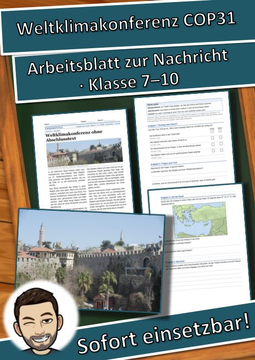
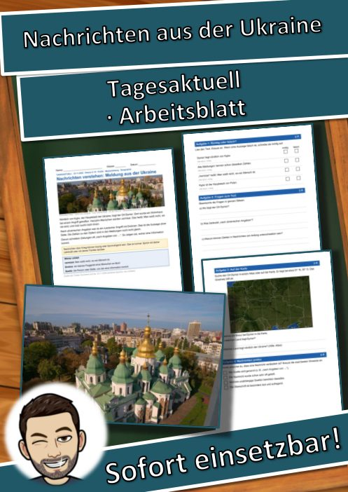
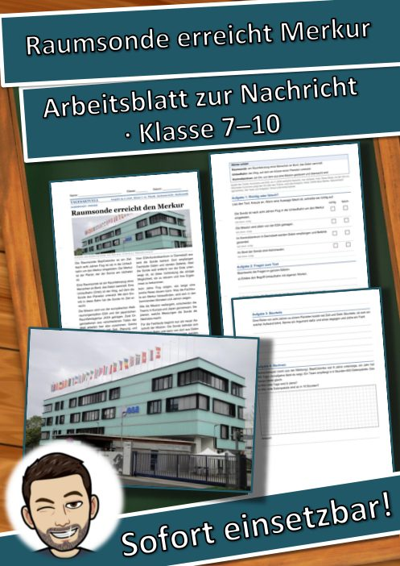
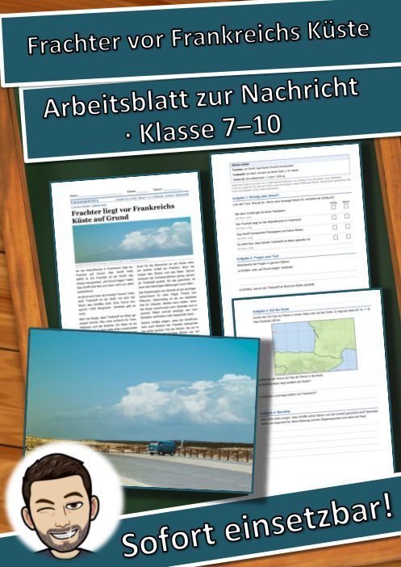
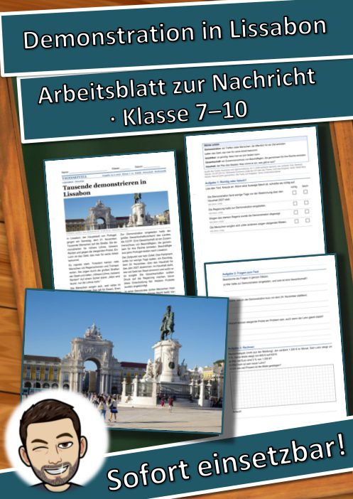

Politik · Geographie · Umwelt
Weltklimakonferenz ohne Abschlusstext
Antalya, Türkei: Die Weltklimakonferenz endet ohne gemeinsamen Abschlusstext.
Foto: Dosseman, CC BY-SA 4.0, Wikimedia CommonsJeden Tag neu: kostenlose Arbeitsblätter zu aktuellen Nachrichten für Klasse 5–6 und 7–10, zu den Themen des täglichen Nachrichten-Reels „Dein Morgen-Update“. Mit Lesetext, Aufgaben, Kartenaufgabe und Lösungsblatt für Lehrkräfte.

Antalya, Türkei: Die Weltklimakonferenz endet ohne gemeinsamen Abschlusstext.
Foto: Dosseman, CC BY-SA 4.0, Wikimedia Commons
Nördlich von Kiew werden nach einem Angriff auf ein Wohnhaus vierzehn Menschen vermisst.
Foto: Daniel Kraft, CC BY-SA 3.0, Wikimedia Commons
Darmstadt: Die Raumsonde der ESA ist nach acht Jahren Flug in die Umlaufbahn des Planeten Merkur eingetreten.
Foto: Reise Reise, CC BY-SA 4.0, Wikimedia Commons
An der französischen Atlantikküste liegt ein Frachter auf Grund.
Foto: Brina Blum, CC0, Wikimedia Commons
In Lissabon demonstrierten am Samstag tausende Menschen für höhere Löhne und gegen steigende Lebenshaltungskosten.
Foto: Berthold Werner, CC BY-SA 4.0, Wikimedia CommonsQuelle und Lizenz: Die Fotos sind frei lizenzierte Bilder von Wikimedia Commons (Nachweis am Blatt) und zeigen den Ort oder das Thema, nicht das Ereignis. Die Texte beruhen auf mindestens zwei unabhängigen Meldungen; die Quellen stehen im Lösungsblatt.
Mehr kostenloses Material: Kostenloses Unterrichtsmaterial · Newsletter